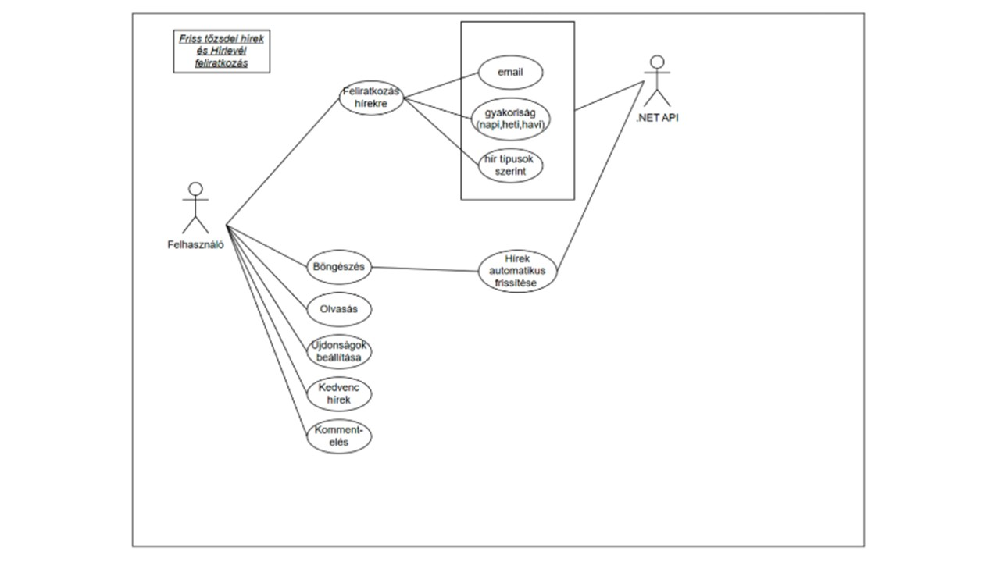

Rendszertervezés - H4
Történet
| Dátum |
Verzió |
Leírás |
Szerző |
| 2025.04.14. |
1.0 |
Dokumentum létrehozása, fejezetek felosztása egymás között. |
Orosz Kristóf
Radvánszky Ádám János |
| 2025.04.14. |
1.1 |
A 2.1 (Főoldal funkciói), 2.2 (Árfolyamfigyelő), 2.3 (Hírlevél és Tőzsdei Hírek) alfejezetek kidolgozása. |
Orosz Kristóf |
1. Bevezetés
2. Felhasználói felület
2.1 Főoldal funkciói
Az alkalmazás főoldala a felhasználók első találkozási pontja a rendszerrel,
ezért kialakítása modern, letisztult és átlátható megjelenést biztosít. A képernyő
tetején található fix navigációs menü segítségével a felhasználók gyorsan és egyszerűen
elérhetik a legfontosabb funkciókat, mint például az Árfolyamfigyelő, Hírek,
Portfóliókezelés, EdgeAI, Fórum, valamint a személyes fiókkezelés lehetőségeit.
A menüpontok egyértelmű elrendezése megkönnyíti az eligazodást, a jobb felső sarokban
elhelyezett "Fiókom" és "Belépés" gombok pedig a regisztrált és új felhasználók számára
is könnyen elérhetők.
A főoldal központi tartalmi részében egy figyelemfelkeltő marketingüzenet jelenik meg,
amely cselekvésre ösztönzi a látogatót: „Csatlakozz hozzánk! – Piacok mozgásban, profit a célkeresztben!
Mesterséges Intelligencia ajánlásokkal!”. Ezt egy kiemelt piros színű gomb követi „Vágj bele!”
felirattal, amely közvetlenül a regisztrációs vagy belépési folyamat elindítását segíti. A gomb
megnyomása után a rendszer automatikusan átirányítja a felhasználót a megfelelő oldalra, így
biztosítva a gyors és gördülékeny belépést. A főoldalon elhelyezett vizuális elem, egy dinamikus
grafikon, a piacok mozgását és a rendszer pénzügyi jellegét szimbolizálja, tovább erősítve a
platform célját és hangulatát.
Az oldal alsó részén található láblécben hasznos és fontos információs linkek kaptak helyet.
Itt érhető el többek között az Általános Szerződési Feltételek (ÁSZF), az Adatvédelmi Tájékoztató, a
Rólunk oldal, valamint a Hírlevél és Súgó menüpontok. Ezek a hivatkozások biztosítják a felhasználók
számára a rendszerrel kapcsolatos átláthatóságot és a jogi feltételek könnyű elérését. A főoldal
felépítése egységes, felhasználóbarát élményt nyújt, amely elősegíti a rendszer funkcióinak gyors
megismerését és támogatja a hatékony felhasználói navigációt.
2.2 Árfolyamfigyelő
Az Árfolyamfigyelő funkció a tőzsdei webalkalmazás egyik legfontosabb
alapszolgáltatása, amely a felhasználók számára valós idejű piaci információkat biztosít
egy könnyen áttekinthető, táblázatos felületen. A táblázatban a legnépszerűbb részvények,
például az Apple Inc. (AAPL), Tesla Inc. (TSLA), Microsoft Corp. (MSFT), Amazon Inc. (AMZN)
és az Alphabet Inc. (GOOGL) szerepelnek. A megjelenített adatok között megtalálható a
részvény neve, aktuális árfolyama HUF-ban, napi változásának százalékos értéke, valamint
a kereskedési lehetőségek. A piaci adatok rendszeresen frissülnek, így biztosítva a
folyamatos és pontos információáramlást a befektetők számára.
A táblázat minden sorában elérhető a Vásárlás és Eladás gomb, amelyek lehetőséget
biztosítanak az azonnali tranzakciók végrehajtására. A Vásárlás gomb zöld színnel jelenik meg,
amely a vételi szándékot jelöli, míg az Eladás gomb piros színben figyelmeztet a részvény eladásának
lehetőségére. Ezek a gombok közvetlenül a táblázatból elérhetők, így a felhasználók egyszerűen és
gyorsan hajthatják végre a kívánt műveleteket. Az oldal alján található frissítési időpont tájékoztatja
a felhasználót az adatok legutóbbi frissítéséről, ezzel növelve a rendszer megbízhatóságát és
átláthatóságát.
Az Árfolyamfigyelő funkciót további kiegészítő lehetőségek teszik még hatékonyabbá és
felhasználóbaráttá. A rendszer lehetőséget biztosít a részvények részletes adatainak megtekintésére,
ahol a felhasználó többek között megismerheti a napi forgalmat, a piaci kapitalizációt vagy az éves
osztalékadatokat. Emellett a felhasználók személyre szabott árfolyamriasztásokat is beállíthatnak,
amelyek automatikusan értesítést küldenek, ha a részvény ára eléri a megadott értékhatárokat. A funkció
egy grafikon megjelenítésére is alkalmas, amely vizuálisan szemlélteti a részvény árfolyamának
múltbeli alakulását, segítve ezzel a befektetési döntések megalapozását. Az Árfolyamfigyelő felülete
így átlátható, interaktív és támogatja a felhasználók gyors, hatékony és megalapozott döntéshozatalát
a tőzsdei kereskedés során.
2.3 Hírlevél és Tőzsdei Hírek
A Friss tőzsdei hírek és Hírlevél feliratkozás funkció a webalkalmazás egyik
kiemelten fontos része, amely a felhasználókat naprakész piaci információkkal látja el,
és támogatja a befektetési döntéseik meghozatalát. A hírek külön oldalon, jól átlátható,
időrendi sorrendben jelennek meg, ahol a felhasználók rövid összefoglalókat, címeket és
forrásmegjelölést találnak a legfontosabb globális eseményekről. A tartalom külső API-k
segítségével kerül integrálásra, így biztosítva a folyamatosan frissülő adatokat, például
egy technológiai vállalat új termékbejelentéséről vagy egy fontos gazdasági döntés
hatásairól. A hírek gyors áttekinthetőségét szűrési lehetőség is segíti, amely lehetővé
teszi, hogy a felhasználók csak az őket érdeklő szektorok vagy földrajzi régiók híreit
jelenítsék meg.
A hírek mellett a Hírlevél feliratkozás funkció biztosítja, hogy a felhasználók e-mailben is
értesüljenek a legfontosabb piaci eseményekről. A feliratkozás egyszerűen, egy rövid űrlap
kitöltésével történik, ahol megadható az e-mail-cím, valamint kiválasztható a kívánt
értesítési gyakoriság és tartalomtípus. A rendszer a megadott adatok alapján napi, heti
vagy havi hírlevelet küld, amely a legfontosabb tőzsdei híreket, portfólióteljesítményt
és kereskedési tippeket tartalmazza. A hírlevelek tartalma személyre szabott, figyelembe
veszi a felhasználó korábbi tevékenységeit és érdeklődési körét, például a gyakran figyelt
részvényeket vagy kedvelt szektorokat. A felhasználók a hírlevelekben található link segítségével
bármikor leiratkozhatnak a szolgáltatásról.
A felhasználói élményt tovább növeli a reszponzív kialakítás, amely biztosítja, hogy a
hírek bármilyen eszközön – asztali számítógépen, tableten vagy mobiltelefonon –
könnyen olvashatók legyenek. A hírek valós idejű frissítését a SignalR technológia
biztosítja, így a felhasználóknak nem kell manuálisan frissíteniük az oldalt egy új hír
megtekintéséhez. A Hírlevél feliratkozás során a rendszer megerősítő e-mailt küld a
felhasználónak, amelyben egy aktiváló link segítségével véglegesíthetik a feliratkozásukat,
biztosítva ezzel az adatvédelem és a visszaélés elleni védelmet. A hírlevelek kialakítása
vizuálisan illeszkedik a webalkalmazás arculatához, így egységes és letisztult megjelenést
biztosít, miközben a felhasználók számára hasznos, naprakész információkat nyújt a pénzügyi piacokról.


2.4 Portfoliókezelés
2.4.1 Befektetési szimulátor
2.5 EdgeAl
2.6 Felhasználói fiók
2.7 ÁSZF, Adatvédelmi Tájékoztató, Rólunk felületek
2.8 Súgórendszer
3. Adatmodellek
3.1. Adatbázis kezelő kiválasztása
3.2. Szemantikai adatmodell
3.3 Relációs adatmodell
3.4. Az adatbázis kezelővel kapcsolatot tartó osztályok
4. A funkcionális modell kiegészítése